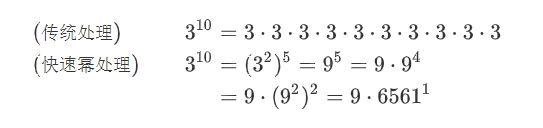
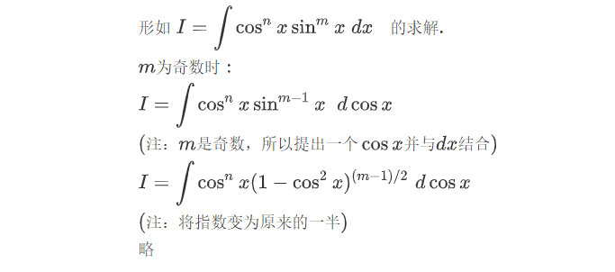
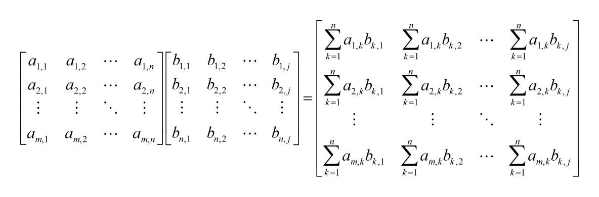
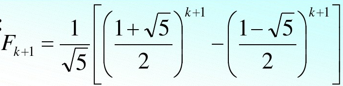

引言 在进入正题之前，这里有一道ACM的变种题，大意是 求N N N^N N N
普通幂运算 Problem Description
Given a positive integerN N N N N N^N N N N ≤ 10 N\leq10 N ≤ 10
这道题非常容易，我们只需对N N N N − 1 N-1 N − 1 循环 即可。
接下来，难度提升 ：前提条件由原来的( N ≤ 10 ) (N \le 10) ( N ≤ 10 ) ( N ≤ 1000000000 ) (N \le 1000000000) ( N ≤ 1000000000 )
难道我们为了做这一道题，将程序循环 1000000000-1 次吗？
不难发现，这样的处理方法在时间复杂度上，是喜闻乐见的O ( n ) O(n) O ( n )
除此之外，如果是在32位计算机中，int 数据类型读取二进制32位，根据 补码 的相关知识，我们知道，最高位用作判断正负号. 因此，int 数据所能表示的范围是：− 2 31 ∼ 2 31 − 1 -2^{31}\sim 2^{31}-1 − 2 31 ∼ 2 31 − 1 − 2147483648 ∼ 2147483647 -2147483648\sim 2147483647 − 2147483648 ∼ 2147483647
显然 极端一点 想要求100000000 0 1000000000 1000000000^{1000000000} 100000000 0 1000000000
所以，实际上，这道升级过后的题要求并不是直接求，而是要求给出 结果的 个位 。
For each test case, you should output the rightmost digit ofN N N^N N N
取模问题 我们知道，求个位数，相当于将结果对10取模。但是经由上述分析我们发现，原结果都无法求，更别说将结果m o d 10 \mod 10 mod 10
为此我们需要深入了解一下模运算的规律，从中找寻简便算法。
下面，我们给出模运算的一些基本运算规则 ：( % 表示取模)
1. ( a + b ) % c = ( a % c + b % c ) % c 2. ( a − b ) % c = ( a % c − b % c ) % c 3. ( a × b ) % c = ( a % c × b % c ) % c \begin{aligned} 1.(a + b) \; \% \;c = (a \;\%\; c + b\; \% \; c) \;\%\; c \\ 2.(a - b)\; \% \;c = (a \;\%\; c - b \;\%\; c ) \;\%\; c \\ 3. (a \times b) \;\%\; c = (a \;\%\; c \times b \;\%\; c) \;\%\;c \end{aligned} 1. ( a + b ) % c = ( a % c + b % c ) % c 2. ( a − b ) % c = ( a % c − b % c ) % c 3. ( a × b ) % c = ( a % c × b % c ) % c
在第三个公式 中发现化简计算的巧门。
在循环求幂时，我们完全可以在进行乘法运算前分别取模，这样大大缩减了 数据规模 ，不会数据溢出了。
循环节 接下来我们再停下脚步，思考这样一个问题：
既然求个位数，那么取值必定在0 ∼ 9 0 \sim 9 0 ∼ 9 结果共只有 10 种可能，之间是否存在规律 不难发现2 n 2^n 2 n 1 2 n 12^n 1 2 n 只需关注 N 的个位数 注意到2 n 2^n 2 n n n n 周期性变化 ，变化规律为：2、4、8、6一次循环 出现循环的原因 这样的循环原理可追溯到 抽屉原理 (又称：鸽巢原理)
假如有n + 1 n+1 n + 1 n n n
而前面的思考中，我们发现有结果有10个可能性，那么保险起见，取长度为11的数组保存依次的结果的话，必定出现两个相同的结果。
而：
数据按照一定规律 变化的过程中，如果出现与前面相同 的结果，那么由于规律 不变，必定产生循环
以2 n 2^n 2 n 2 n + 1 2^{n+1} 2 n + 1 4 × 2 4\times2 4 × 2
进而，我们把1、3、4、5、6、7、8、9对应的循环都找出来，用 打表法 即可得到答案，时间复杂度O ( 1 ) O(1) O ( 1 )
总结以上经验之后，我们得到了如下的AC代码（C++）
1 2 3 4 5 6 7 8 9 10 11 12 13 14 15 16 17 18 19 20 21 22 23 24 25 26 27 #include "bits/stdc++.h" using namespace std;vector<int > res[10 ] = {{0 }, {1 }, {2 , 4 , 8 , 6 }, {3 , 9 , 7 , 1 }, {4 , 6 }, {5 }, {6 }, {7 , 9 , 3 , 1 }, {8 , 4 , 2 , 6 }, {9 , 1 }}; int main () int t; cin >> t; while (t--){ int n; cin >> n; size_t pos = n%(res[n%10 ].size ()); pos = (pos)?(pos-1 ):(res[n%10 ].size ()-1 ); cout << res[n%10 ][pos] << endl; } return 0 ; }
引言 · 完
快速幂算法| Quick Power 前面我们提到，如果需要我们利用计算机求出给定实数a a a b b b a b a^b a b
a b = ( ( ( ( ( a ∗ a ) ∗ a ) ∗ a ) ∗ a ) ∗ ⋯ ∗ a ) a^b=(((((a*a)*a)*a)*a)*\cdots*a) a b = ((((( a ∗ a ) ∗ a ) ∗ a ) ∗ a ) ∗ ⋯ ∗ a )
其时间复杂度为Θ ( n ) \Theta(n) Θ ( n ) yes
快速幂算法的核心思想就是每一步都把指数分成两半 ，而相应的底数做平方运算 。
这样不仅能把非常大的指数给不断变小，所需要执行的循环次数也变小，而最后表示的结果却一直不会变。下面来具体阐述一下其算法思想。
考虑两种情况，指数b b b
当b b b a b a^b a b a b / 2 ∗ a b / 2 a^{b/2}*a^{b/2} a b /2 ∗ a b /2
当b b b a a a
综上所述，有恒等式：
a b = { ( a b / 2 ) 2 , b is even, a ( a ( b − 1 ) / 2 ) 2 , b is odd. a^b=\begin{cases}(a^{b/2})^2,&b\text{ is even,}\\a(a^{(b-1)/2})^2,&b\text{ is odd.}\end{cases} a b = { ( a b /2 ) 2 , a ( a ( b − 1 ) /2 ) 2 , b is even, b is odd.
于是就可以将原问题划归为两个半规模 的子问题。不仅如此，这两个子问题是完全一模一样的，不用需要重复计算。
下面给出伪代码（递归版本）：
Algorithm: Quick-Power ( a , b ) 1. i f b m o d 2 = 0 t h e n 2. t m p ← Quick-Power ( a , b / 2 ) r e t u r n t m p 2 3. e l s e 8. t m p ← Quick-Power ( a , ( b − 1 ) / 2 ) r e t u r n a × t m p 2 \begin{aligned} &\text{Algorithm: }\;\text{Quick-Power}(a,b)\\\\ 1.&\;\mathbf{if}\;b\mod 2=0\;\mathbf{then}\\ 2.&\;\qquad tmp \leftarrow\text{Quick-Power}(a,b/2)\;\mathbf{return}\; tmp^2\\ 3.&\;\mathbf{else}\\ 8.&\;\qquad tmp \leftarrow\text{Quick-Power}(a,(b-1)/2)\;\mathbf{return}\;a\times tmp^2 \end{aligned} 1. 2. 3. 8. Algorithm: Quick-Power ( a , b ) if b mod 2 = 0 then t m p ← Quick-Power ( a , b /2 ) return t m p 2 else t m p ← Quick-Power ( a , ( b − 1 ) /2 ) return a × t m p 2
不难得出，最坏时间有W ( n ) = W ( n / 2 ) + Θ ( 1 ) W(n)=W(n/2)+\Theta(1) W ( n ) = W ( n /2 ) + Θ ( 1 ) W ( n ) = Θ ( log n ) W(n)=\Theta(\log n) W ( n ) = Θ ( log n ) O ( 1 ) O(1) O ( 1 )
下面，我们以3 10 3^{10} 3 10

3的10次方，指数是10，我们将指数 “拦腰截断 ” 变为5，底数平方 一下变成9；（第一次循环）
9的5次方，指数是5，为奇数，先提出一个9，对9的4次方做和上面相同的处理；（第二次循环）
81的2次方，相同操作，得到6561的1次方；（第三次循环）
6561的1次方，指数是1，为奇数，提出一个6561，得到6561的0次方。最终结果就是之前提出的9和现在提出的6561相乘。
数学思维 可忽视下面的数学部分
上述算法，整体其实属于 数论 知识。事实上这种思想在数学中也随处可见。例如，这种思想在 高数·微积分学 中也有所体现：

与模运算结合 当问题仍然是要求给出个位数，又或是m o d n \mod n mod n 快速幂 算法相结合起来，具体体现就是在计算时先取模再相乘。
如：
代码实现 C/C++ : 非递归实现
1 2 3 4 5 6 7 8 9 10 11 long long fast_pow (long long base,long long power,int mod_num) long long res = 1 ; while (power > 0 ){ if (power&1 ) res = (res * base) % mod_num; power = power >> 1 ; base = (base * base) % mod_num; } return res; }
矩阵与Fibonacci 矩阵快速幂 在线性代数中，矩阵乘法有着这样的定义：

由此也可以轻易得到其计算代码：
1 2 3 4 5 6 7 for (i = 1 ; i <= n; i++){ for (j = 1 ; j <= n; j++){ for (k = 1 ; k <= n; k++){ c[i][j] = c[i][j] + a[i][k] * b[k][j]; } } }
上述代码建立在左矩阵 a 和右矩阵 b 都是n n n c 那么将矩阵乘法与前面的快速幂算法结合，不就得到了矩阵求幂的快速算法了吗？
心动不如行动！
斐波那契数列| Fibonacci Sequence 有这样一组数：1、1、2、3、5、8、13、…… 这组数遵循一个 特定的规律 ，那就是除第一第二个数以外，其他数都是前两项数之和。
数学表达如下：
F ( n ) = { 1 , n = 1 或 n = 2 F ( n − 1 ) + F ( n − 2 ) , n ≥ 3 \begin{aligned} F(n)=\begin{cases} 1,&n=1\;\text或\;n=2\\ F(n-1) + F(n-2) ,&n\geq3 \end{cases}\end{aligned} F ( n ) = { 1 , F ( n − 1 ) + F ( n − 2 ) , n = 1 或 n = 2 n ≥ 3
这样的数列，称为 斐波那契数列 （ fibonacci sequence ，别称：黄金分割数列、兔子数列 ）.
在1730年，法国数学家 De Moivre 给出其通项公式：

十九世纪初，法国数学家比内首先证明出这一表达式。因此该式也被称为比内公式。
补充：
类 斐波那契数列
F ( n ) = { a , n = 1 b , n = 2 A ⋅ F ( n − 1 ) + B ⋅ F ( n − 2 ) + C , n ≥ 3 \begin{aligned} F(n)=\begin{cases} a,&n=1\\b,&n=2\\ A ·F(n-1) + B· F(n-2) + C,&n\geq3 \end{cases}\end{aligned} F ( n ) = ⎩ ⎨ ⎧ a , b , A ⋅ F ( n − 1 ) + B ⋅ F ( n − 2 ) + C , n = 1 n = 2 n ≥ 3
那么，矩阵与Fibonacci有什么关系呢？
其实关系有许多，这里仅提供一种关系，如下：
因此，我们甚至可以通过矩阵求幂的方法 ，算出fibonacci sequence 的第n项！
1 2 3 4 5 6 7 8 9 10 11 12 13 14 15 16 17 18 19 20 21 22 23 24 25 26 27 28 29 30 31 32 33 34 35 36 37 38 39 40 41 42 43 44 45 46 47 48 49 50 51 52 53 54 55 56 57 58 59 60 61 62 #include <stdio.h> #include <string.h> #include <stdlib.h> #include <algorithm> using namespace std;const int mod = 1e9 + 7 ;struct Node { long long mat[2 ][2 ]; Node (){} Node (long long a_, long long b_, long long c_, long long d_) { mat[0 ][0 ] = a_; mat[0 ][1 ] = b_; mat[1 ][0 ] = c_; mat[1 ][1 ] = d_; } Node operator *(const Node &y) { Node x (0 ,0 ,0 ,0 ) ; for (int i = 0 ; i <= 1 ; i++){ for (int j = 0 ; j <= 1 ; j++){ for (int k = 0 ; k <= 1 ; k++){ x.mat[i][j] = x.mat[i][j]%mod + ((this ->mat[i][k]%mod)*(y.mat[k][j]%mod))%mod; x.mat[i][j] %= mod; } x.mat[i][j] %= mod; } } return x; } }; Node Pow (Node a, int n) Node x (1 ,0 ,0 ,1 ) ; while (n > 0 ){ if (n&1 ) x = x*a; n = n >> 1 ; a = a*a; } return x; } int main () int n; while (scanf ("%d" , &n) != EOF) { Node x (1 ,1 ,1 ,0 ) ; Node ans = Pow (x, n); printf ("%lld\n" ,ans.mat[0 ][1 ]); } return 0 ; }
此外，对于 类斐波那契数列 也有类似的关系：
我们花这么多篇幅讲这个，有什么含义呢？事实上，ACM中，将fibonacci和取模运用起来，出了一些典型的题目
经典例题 Number Sequence Time Limit: 2000/1000 MS (Java/Others) Memory Limit: 65536/32768 K (Java/Others) Total Submission(s): 243613 Accepted Submission(s): 62051
Problem Description
A number sequence is defined as follows:
f(1) = 1, f(2) = 1, f(n) = (A * f(n - 1) + B * f(n - 2)) mod 7.
Given A, B, and n, you are to calculate the value of f(n).
Input
The input consists of multiple test cases. Each test case contains 3 integers A, B and n on a single line (1 <= A, B <= 1000, 1 <= n <= 100,000,000). Three zeros signal the end of input and this test case is not to be processed.
Output
For each test case, print the value of f(n) on a single line.
Sample Input
Sample Output
很明显，这道题将我们前面所学到的知识：模运算、快速幂、矩阵快速幂、斐波那契数列 全部融合在一起了，那么，你能解决这道题了吗？
如果，你以为本文章就这么结束了，那么你就错了！
这道题，如果用到前面这些知识，代码量大，数据多，难以处理。那么我们还能用学过的什么来解决这个问题呢？
循环节问题|点击跳转
由于所求结果都是 mod 7.那么，答案就在 0~6 这个区间内！！！
而由斐波那契数列的定义我们知道，F(n)需要由F(n-1)和F(n-2)共同决定.
由组合数学的相关知识，结果有C 7 1 ⋅ C 7 1 = 49 C^1_7 ·C^1_7 = 49 C 7 1 ⋅ C 7 1 = 49
AC code:
1 2 3 4 5 6 7 8 9 10 11 12 13 14 15 16 17 18 19 20 21 #include <iostream> #include <stdio.h> #include <string.h> int main () using namespace std; int n,d[1000 ],i,a,b; while (cin >> a >> b >> n && n){ if (a == 0 && b == 0 && n == 0 ) return 0 ; for (i=1 ;i<=49 ;i++){ if (i==1 ) d[i]=1 ; else if (i==2 ) d[i]=1 ; else d[i]=(a*d[i-1 ]+b*d[i-2 ])%7 ; } printf ("%d\n" ,d[n%49 ]); } return 0 ; }
等等，事实真的是这样吗？
这个问题确实可以通过循环节来做，但是实际情况中，一定是第一个结果一定在循环内部吗？
说得简单点：1、2、3、6、7、8、9、6、7、8、9、6、7、8、9
上述数据中，循环体是 6、7、8、9，而1、2、3并不包含在内哦。
同理，我们七七四十九，是否把范围缩小了呢？
建议看看这篇文章，找寻答案：https://donghuangzhong.github.io/2020/02/09/HDU-1005/
全文·完
参考资料 1.Rightmost Digit|HDOJ1061
2.快速幂算法|CSDN
3.矩阵快速幂算法|CSDN
4.斐波那契数列|百度百科
5.Number Sequence|HDOJ1005
6.HDU-1005解答|Hexo博客